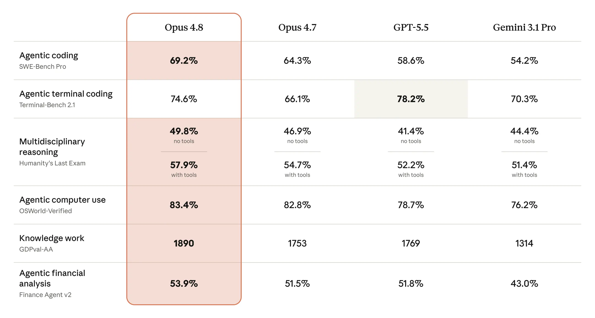
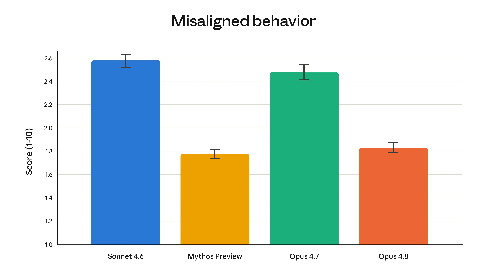

Introducing Claude Opus 4.8
We’re upgrading Claude Opus to a new version: Claude Opus 4.8. It builds on Opus 4.7 with improvements across benchmarks, and is a more effective collaborator. It’s available today for the same price.
Opus 4.8 launches alongside several new features. Users on claude.ai now have control over the amount of effort Claude puts into a task. Claude Code has a new “dynamic workflows” feature that allows it to tackle very large-scale problems. And fast mode for Opus 4.8—where the model can work at 2.5× the speed—is now three times cheaper than it was for previous models.
Opus 4.8’s capabilities
The table below shows how Opus 4.8 compares to its predecessor and to other models on tests of coding, agentic skills, reasoning, and practical knowledge work tasks. More details and a much wider range of capability evaluations are provided in the Claude Opus 4.8 System Card.

Collaborating with Opus 4.8
Early testers have found Claude Opus 4.8 to be more reliable and sharper in its judgment when it’s performing agentic tasks. Below are quotes from many of these testers about their experience collaborating with Opus 4.8:
Claude Opus 4.8 has noticeably better judgment. In Claude Code, it asks the right questions, catches its own mistakes, pushes back when a plan isn’t sound, and builds up confidence around complex, multi-service explorations before making big changes. It’s a great model to build with.
On our Super-Agent benchmark, Claude Opus 4.8 is the only model to complete every case end-to-end, beating prior Opus models and GPT-5.5 at parity on cost. For agent products in translation, deep research, slide-building, and analysis, it delivers powerful reliability.
On CursorBench, Claude Opus 4.8 exceeds prior Opus models across every effort level. Tool calling is meaningfully more efficient, using fewer steps for the same intelligence, and it carries end-to-end tasks through.
Claude Opus 4.8 delivers the highest score recorded on our Legal Agent Benchmark, and is the first model to break 10% overall on the all-pass standard. For substantive legal work, that’s the kind of accuracy lift that translates directly into how much real attorney work our customers can hand off with confidence.
Claude Opus 4.8 feels like a major quality-of-life update over Opus 4.7: faster, easier to collaborate with, and better at carrying context and style direction across a long session. Opus 4.8 is the model I kept trusting for work where voice, taste, and technical execution all have to happen side-by-side.
Claude Opus 4.8 is the strongest computer-use and browser-agent model we’ve tested, scoring 84% on Online-Mind2Web, which is a meaningful jump over both Opus 4.7 and GPT-5.5. It stays reflective and on-task in the way our customers’ agent workloads need to be reliable end-to-end.
Claude Opus 4.8 uses tools cleanly and follows instructions with the consistency our autonomous engineering workloads need to keep running unattended. It improves on Opus 4.6 and fixes the comment-verbosity and tool-calling issues we saw with Opus 4.7. This release from Anthropic translates directly into faster capability gains for engineers building on Devin.
On our long-running evals, Claude Opus 4.8’s analysis was consistently higher quality than prior Opus models. It finished faster and produced richer, more information dense outputs. Overall, a noticeably better signal to noise ratio. The biggest differentiator was Opus 4.8’s tendency to proactively flag issues with the inputs and outputs of an analysis, something other models routinely missed and left to the users to catch.
Across CoCounsel Legal, Claude Opus 4.8 delivered meaningful improvements in consistency and reasoning quality compared to prior Opus models. For the high-stakes professional workflows our customers depend on, that reliability matters. As we build fiduciary-grade AI systems for legal and tax professionals, advances like these help raise the standard for trusted AI performance in real-world workflows.
Claude Opus 4.8 sets a new bar for enterprise AI. In Genie, Databricks’ AI agent for data and knowledge work, the new Opus model unlocks a step change in agentic reasoning, tackling deeper, multistep questions faster than any prior Opus. Its multimodal strength also lets Genie reason directly over PDFs, diagrams, and other unstructured content at 61% cheaper token cost than Opus 4.7.
For financial-document workflows in Hebbia’s orchestrator, Claude Opus 4.8 delivers the same strong quality as Opus 4.7 with noticeably better citation precision and more token efficiency on retrieval, which works incredibly well for the kinds of dense filings our customers run every day.
One of the most prominent improvements in Opus 4.8 is its honesty. We train all our models to be honest—for instance, to avoid making claims that they can’t support. But a general problem with AI models is that they sometimes jump to conclusions, confidently claiming to have made progress in their work despite the evidence being thin. Early testers report that Opus 4.8 is more likely to flag uncertainties about its work and less likely to make unsupported claims. This is borne out in our evaluations, which show that Opus 4.8 is around four times less likely than its predecessor to allow flaws in code it has written to pass unremarked.
As always, we ran a detailed alignment assessment on the model before release. In terms of positive traits, our Alignment team concluded that Opus 4.8 “reaches new highs on our measures of prosocial traits like supporting user autonomy and acting in the user’s best interest.” The assessment also showed Opus 4.8 to have rates of misaligned behavior (such as deception or cooperation with misuse) that are substantially lower than Opus 4.7, and similar to our best-aligned model, Claude Mythos Preview. The full alignment assessment, accompanied by a suite of pre-deployment safety tests, is reported in the Claude Opus 4.8 System Card.

Also launching today
In addition to Claude Opus 4.8, we’re making the following updates:
- Dynamic workflows. This new feature, available in research preview, allows Claude to take on even bigger tasks in Claude Code. Claude can plan the work and then run hundreds of parallel subagents in a single session (and with Opus 4.8, the agents can run for even longer). It then verifies its outputs before reporting back to the user. For example, Claude Code with Opus 4.8 can now carry out codebase-scale migrations across hundreds of thousands of lines of code from kickoff to merge, with the existing test suite as its bar. You can read more about dynamic workflows—available in Claude Code for Enterprise, Team, and Max plans—in this post.
- Effort control in claude.ai and Cowork. A new control alongside the model selector lets users choose how much effort Claude puts into a response. On higher effort settings, Claude will think more frequently and more deeply to give better responses. On lower effort settings, Claude will respond faster and use up a user’s rate limits more slowly. Users now have this choice—the effort control is available on all plans.
- The Messages API now accepts system entries inside the messages array. Developers can update Claude’s instructions mid-task without breaking the prompt cache or routing the update through a user turn. This can be used in a given harness to update permissions, token budgets, or environment context as an agent runs.
A note on effort
Opus 4.8 defaults to high effort, which we judge to be the best overall balance of quality and user experience. On coding tasks, this effort level spends a similar number of tokens as Opus 4.7’s default, but with better performance. Users can choose “extra” (“xhigh” in Claude Code) or “max,” and the model will spend more tokens to get better results; we recommend using “extra” for difficult tasks and long-running asynchronous workflows. We have increased rate limits in Claude Code to accommodate the higher token usage of higher effort levels; users can select whichever makes sense for their particular project.
What’s next?
Users will find Opus 4.8 to be a modest but tangible improvement on its predecessor. There’s still more to be done: we’re working on developing and releasing models that provide many of the same capabilities as Opus at a lower cost.
Not only that, but we plan to release a new class of model with even higher intelligence than Opus. As part of Project Glasswing, a small number of organizations are currently using Claude Mythos Preview for cybersecurity work. Models of this capability level require stronger cyber safeguards before they can be generally released. We’re making swift progress on developing these safeguards and expect to be able to bring Mythos-class models to all our customers in the coming weeks.
Availability
Claude Opus 4.8 is available everywhere today. Pricing for regular usage is unchanged from Opus 4.7: $5 per million input tokens and $25 per million output tokens. Pricing for fast mode is $10 per million input tokens and $50 per million output tokens. Developers can use claude-opus-4-8 via the Claude API.
Footnotes
- Terminal-Bench 2.1: We reported scores for all models using the Terminus-2 public harness. GPT-5.5’s reported score with the Codex CLI harness is 83.4%.
- OSWorld-Verified: We made changes to how we run the OSWorld-Verified evaluation in order to more accurately reflect the model’s performance in the real world, and have updated the Opus 4.7 score to 82.3%. Read more about the updates in the System Card.
- Finance Agent v2: Gemini 3.5 Flash scores 57.9% on Finance Agent v2, a significant improvement over Gemini 3.1 Pro.
Related content
Claude discovers a novel enzyme system with CRISPR-like repeats
We’re announcing a new life sciences research group and laboratory at Anthropic. This post introduces the team behind this work and shares early results in which Claude discovered a novel enzyme system with properties reminiscent of CRISPR, with only high-level direction from our scientists.
Read morePartnering with Accenture on embedded evaluation
Read moreIntroducing the Life Sciences Verification Program
The Life Sciences Verification Program (LSVP) gives life science professionals access to Claude Mythos, Opus, and Sonnet models with a refined set of safeguards more permissive for biology-related work.
Read more